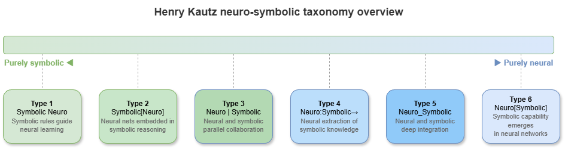
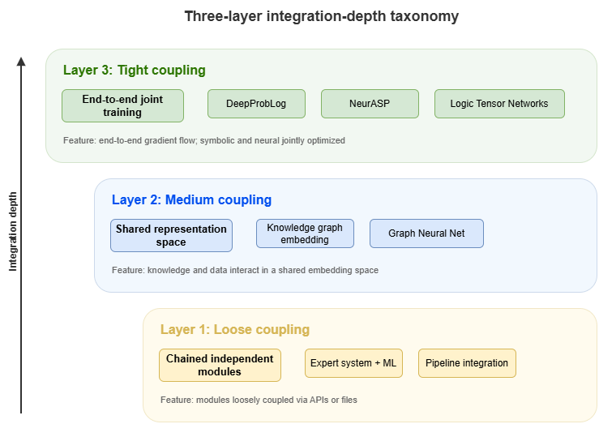
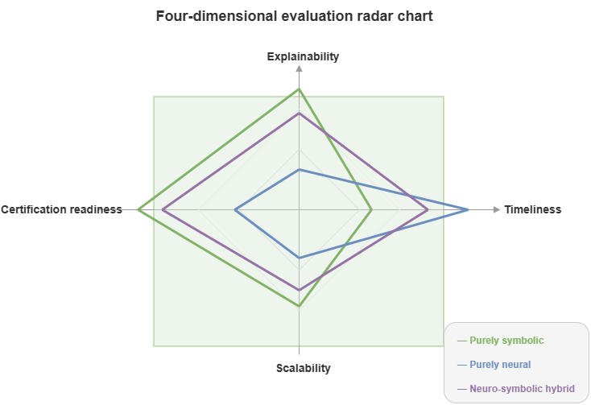

After the preceding chapters discussed symbolic and connectionist approaches separately, this chapter focuses on how the two are fused. Centered on the question of how different types of neuro-symbolic systems are distinguished and selected, we first review a classic classification spectrum, then propose a three-layer integration-depth taxonomy oriented to low-altitude traffic engineering practice, establishing a technical roadmap for the model design and system deployment developed later in the book.
7.1 Classical taxonomies: Henry Kautz’s neuro-symbolic spectrum#
Any taxonomy of neuro-symbolic systems must engage the classic six-mode spectrum proposed by AI pioneer Henry Kautz in 2020. Kautz partitions combinations of neural networks and symbolic systems according to their joint structure into six basic patterns:
Symbolic Neuro symbolic: Neural networks serve as perceptual/decoding modules at input and output; symbolic reasoning sits in the middle.
Symbolic[Neuro]: Symbolic systems dominate; neural networks are invoked for specific pattern-recognition subtasks (e.g., AlphaGo’s search tree calling a value network).
Neuro|Symbolic: Neural networks extract features from unstructured data, map them to discrete symbols, and hand them to a symbolic engine (pipeline architecture).
Neuro:Symbolic \(\rightarrow\) Neuro: Symbolic rules act as prior knowledge compiled into initial weights or training objectives; at run time the system is still a pure neural network.
\(\text{Neuro}_{\text{Symbolic}}\): The neural architecture itself embodies symbolic processing (e.g., neural tensor networks, differentiable logic solvers).
Neuro[Symbolic]: Neural networks dominate; internal symbolic solvers are called when combinatorial explosion makes purely neural handling infeasible.
Kautz’s spectrum is theoretically very complete. For the concrete, large-scale engineering of trustworthy low-altitude traffic governance, however, we need a framework that foregrounds systems engineering, integration depth, and certification readiness.
7.2 A three-layer integration-depth taxonomy: symbolic-dominant / hybrid-pipeline / deeply-fused#
Guided by system architecture and computational-graph coupling in deployed systems, this chapter adopts a “three-layer integration-depth taxonomy” for low-altitude traffic governance. Layers 1–3 order neuro-symbolic fusion from loose to tight:
Layer 1 (Symbolic-dominant): Rule-led, knowledge-augmented systems.
Layer 2 (Hybrid-pipeline): Hybrid pipelines (typically KG + RAG + LLM).
Layer 3 (Deeply-fused): Deep fusion (joint computation directly on graph and tensor spaces).
These layers are not ranked as universally better or worse; they align with different business settings in low-altitude traffic that impose distinct latency and explainability requirements.
7.3 Layer 1: Rule-led knowledge-augmented systems#
In Layer 1, classical symbolic logic engines (e.g., rule engines, solvers) fully control control and decision flows. Deep learning models act only as peripheral “perceptors” or “soft sensors.”
Mechanism: Neural networks (e.g., computer vision) process radar or imagery and emit discrete facts (e.g., “unknown UAV detected at coordinates (x,y)”). Facts become RDF triples injected into a knowledge graph. A graph-based reasoner then performs deterministic deductive reasoning against preset CCAR aviation regulations.
Use cases: Static flight-plan approval or airspace-admission checks where safety demands are extreme, rules are crisp, and tolerance for error is zero.
Limitations: “Perception error propagation.” If the neural front end misclassifies, the symbolic core cannot correct or adapt via gradient backpropagation, so robustness is comparatively weak.
7.4 Layer 2: KG + retrieval augmentation + language-model pipelines#
Layer 2 follows the rise of large language models (LLMs) with a loosely coupled pipeline architecture.
Mechanism: The LLM acts as the cognitive hub. For complex traffic risk assessment, the model first pulls ontology knowledge, rule constraints, and historical events from SkyKG via graph retrieval (GraphRAG) or SPARQL. Under those structured-evidence constraints (prompt engineering), the LLM performs semantic completion, chain reasoning, and produces human-readable explanation reports.
Use cases: Offline accident-report analysis, interactive regulatory Q&A for UAV pilots, non–real-time macro traffic assessment.
Strengths and limits: Explanations are excellent and can be narrated in natural language. LLM inference latency, token cost, and occasional “hallucination” make millisecond-level multi-UAV airborne deconfliction impractical.
7.5 Layer 3: Deeply fused models running directly on KG / TKG#
Layer 3 represents the deep fusion frontier of neuro-symbolic AI: symbols (nodes/edges/rules) and connections (tensors/weights/gradients) share a unified mathematical substrate.
Mechanism: Models run directly on temporal knowledge graph (TKG) structure. Symbolic rules become regularizers in the loss (logic as loss) or message-passing paths in graph neural networks (GNNs). End-to-end training learns data distributions while “hard coding” physical constraints.
Use cases: Real-time conflict detection in dense urban low-altitude traffic, swarm cooperative deconfliction, high-frequency time-varying flow prediction.
Strengths: Combines strong neural perception with millisecond inference and partial causal explainability grounded in graph structure.
7.6 Comparing the three paths: explainability, real-time performance, scalability, certification readiness#
To guide engineering choices, we compare the three paths along four dimensions critical to safety-critical systems:
Dimension |
Layer 1 (symbolic-dominant) |
Layer 2 (hybrid pipeline LLM+KG) |
Layer 3 (deep fusion TKG+GNN) |
|---|---|---|---|
Explainability |
Very high (strict causal deductive chains) |
High (natural-language explanations with evidential support) |
Moderate (local explanations via feature attribution and subgraph attention) |
Real-time performance |
Low–medium (limited by combinatorial explosion in symbolic solvers) |
Very low (autoregressive LLM latency) |
Very high (single forward pass; streaming millisecond computation) |
Scalability |
Low (heavy expert effort to author and maintain rules) |
Medium–high (LLM generalization; open-domain text) |
Very high (models migrate across city airspace scales) |
Certification readiness |
High (white-box rules; natural fit to airworthiness norms) |
Low (hard to formally verify text; hallucination risk) |
Medium–high (needs statistical calibration such as conformal prediction for certification) |
7.7 Book-wide technical thread and chapter mapping#
With this roadmap, the rest of the book’s structure becomes clear:
Part III (Static cognition): Focuses on Layer 2 (hybrid pipeline)—how SkyKG drives large models for highly explainable risk reasoning and compliance in static settings (Chapters 8–10).
Part IV (Dynamic coordination): Focuses on Layer 3 (deep fusion)—high-frequency dynamic environments requiring millisecond response; GNNs on TKGs for conflict detection and cooperative avoidance (Chapters 11–13).
Part V (Trustworthy certification): Addresses the Achilles’ heel of neuro-symbolic stacks: neural components bring certification challenges in both Layer 2 and Layer 3. Conformal prediction and distributional monitoring supply “airworthiness-grade” uncertainty for outputs (Chapters 14–17).
Part VI (Systems substrate): Consolidates algorithms into cloud–edge collaborative physical architectures (Chapters 18–21), bridging theory to city-scale low-altitude infrastructure.
This mapping clarifies how later parts relate. We next enter the static-cognition domain of Layer 2 hybrid pipelines—basic paradigms of knowledge injection and explanation generation.
Chapter summary#
This chapter framed the taxonomy and technical roadmap of neuro-symbolic systems—how fusion depth shapes understanding and selection. Henry Kautz’s classic spectrum gives theoretical coordinates for combining symbolic and neural components; for low-altitude traffic practice we introduced symbolic-dominant, hybrid-pipeline, and deeply-fused layers to characterize integration tightness and deployment profiles; rule-led systems, KG+RAG+LLM pipelines, and KG/TKG-native deep fusion map to high explainability, rich interaction, and high real-time performance, respectively; we compared explainability, real-time performance, scalability, and certification readiness; finally we mapped book parts onto this roadmap so later chapters follow a single systems evolution thread rather than isolated model sketches.
Key concepts#
Neuro-symbolic spectrum: A taxonomy of how neural and symbolic methods are composed.
Symbolic-dominant: Rules and knowledge engines at the core; neural modules at the periphery.
Hybrid-pipeline: KG, retrieval, and language models cooperating in a mixed pipeline.
Deeply-fused: Symbols woven directly into the neural computational graph.
Certification readiness: How far a system is from auditability, provability, and high-responsibility workflows.
Study questions#
Why can systems all called “neuro-symbolic” differ sharply in explainability and real-time performance?
Which low-altitude traffic tasks fit Layer 2 better, and which fit Layer 3?
If certification readiness is paramount, what architectural factors should dominate selection?
Case study#
A “three implementations of one low-altitude task” case: the same risk judgment executed with a rule-led system, a KG+LLM hybrid, and a TKG+GNN deep fusion—contrasting explainability, latency, scalability, and certification preparation.
Figure suggestions#
Figure 7-1: Overview of Henry Kautz’s neuro-symbolic spectrum.

Figure 7-2: Ladder diagram of the three-layer integration-depth taxonomy.

Figure 7-3: Four-dimensional radar chart (explainability, real-time performance, scalability, certification readiness).

Formula index#
This chapter is taxonomy and comparison; there is no core mathematical derivation.
Suggested indexed objects:
Layer 1 / Layer 2 / Layer 3and their typical system structures.
References#
Kautz, H. (2022). The Third AI Summer: AAAI Robert S. Engelmore Memorial Lecture. AI Magazine, 43(1), 93–104.
Garcez, A. d., & Lamb, L. C. (2020). Neurosymbolic AI: The 3rd Wave. arXiv preprint arXiv:2012.05876.
Garcez, A. d., Broda, K. B., & Gabbay, D. M. (2002). Neural-Symbolic Learning Systems: Foundations and Applications. Springer.
Marcus, G. (2020). The Next Decade in AI: Four Steps Towards Robust Artificial Intelligence. arXiv preprint arXiv:2002.06177.
LeCun, Y., Bengio, Y., & Hinton, G. (2015). Deep Learning. Nature, 521(7553), 436–444.
Hamilton, W. L., Ying, R., & Leskovec, J. (2017). Inductive Representation Learning on Large Graphs. Advances in Neural Information Processing Systems (NeurIPS).